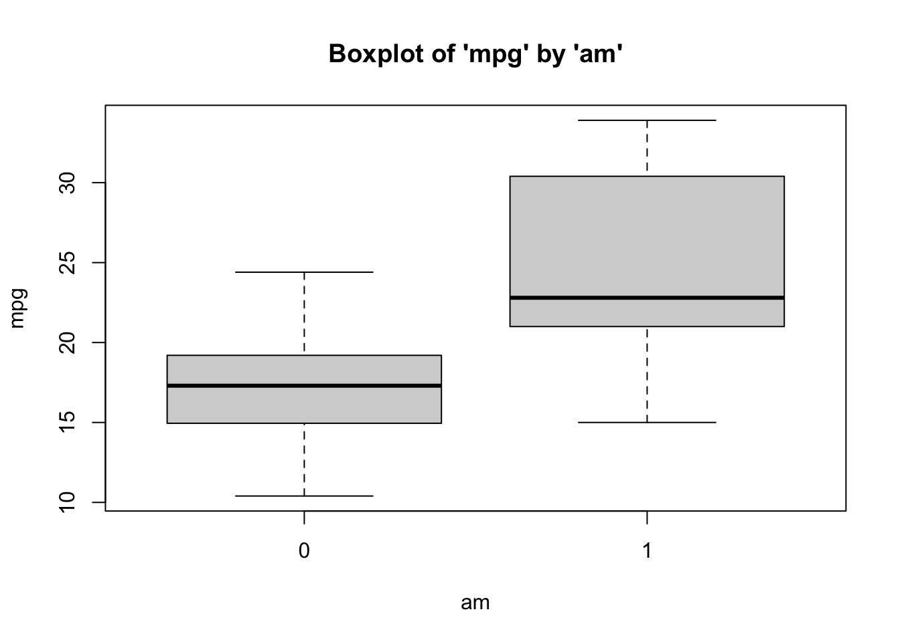
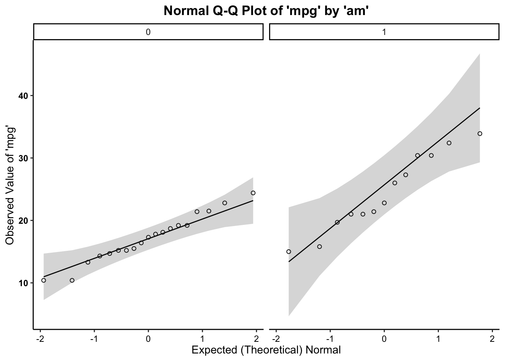

Independent Samples T-test
Are there mean differences in miles-per-gallon
(mpg) by a car’s transmission type
(am)?
Here, we’ll be working from the mtcars data set, to examine mean
differences in the miles per gallon of a car
(mpg: measured as an interval-ratio variable),
by the transmission type of a car (am:
measured 0 for automatic and 1 for manual).
What is the Independent Samples t-Test?
The t-test examines the differences in means between two groups, in effort to see if the differences reflect true differences that we could expect to find in the population.
Assumptions and Diagnostics for the Independent Samples t-Test
The assumptions for a t-test are…
- Independence of Observations
- Equal Sample Sizes
- Homogeneity of Variance
- Normality
1. Independence of Observations (Examine Data Collection Strategy)
- Groups are not related or dependent upon each other. Case can’t be
in more than one group. No ties between observations. Examine data
collection strategy to see if there are linkages between observations.
- Given that the
mtcarsdata have been randomly-sampled, we have met the assumption of independence of observations.
- Given that the
2. Equal Sample Sizes (Examine N for each group)
- The number of cases in each group should be relatively similar. (If not, use pooled variance/unequal variances asssume t-test formula)
3. Homogeneity of Variance (Examine SD2 for each group)
- Both groups have approximately equal variances (SD2). The distributions (or spread) for the groups are approximately equal. Keppel & Zedeck (1989) suggest that variance comparison should not exceed 10:1 ratio (or… alternatively, the SDs, when compared, should not exceed around a 3:1 ratio). In the past, you may have been instructed to use the Levene’s test to assess the degree of similarity in variances across groups. This is wrong. Unfortunately, tests such as these are overly-sensitive to trivial deviations from homogeneity of variance. It is a better practice to compare group variances/SDs based on the ratios listed above.
For both of the above (2 and 3) assumptions, we can examine the univariate data table, broken out by group:
##
## Descriptive statistics by group
## group: 0
## vars n mean sd median trimmed mad min max range skew kurtosis se
## X1 1 19 17.15 3.83 17.3 17.12 3.11 10.4 24.4 14 0.01 -0.8 0.88
## ------------------------------------------------------------------
## group: 1
## vars n mean sd median trimmed mad min max range skew kurtosis se
## X1 1 13 24.39 6.17 22.8 24.38 6.67 15 33.9 18.9 0.05 -1.46 1.71- Given that the group sizes are similar,
we have met the assumption of equal sample sizes. Further, given that the standard deviations for both groups do not exceed a 3:1 ratio,we have met the assumption of homogeneity of variance.
4. Normality (Examine Plots: Histogram, Q-Q Normality Plots, Box-and-Whiskers Plots)
- Distribution must be relatively normal. (If violated, use “unequal variances assumed” formula, otherwise, use “equal variances assumed”). In the past, you may have been instructed to use the Shapiro-Wilk test to assess normality. This is wrong. Unfortunately, tests such as these are overly-sensitive to trivial deviations from normality, and may result in you believing you must correct for normality by transforming your data. Please do not do this. The good thing is the t-test is super-robust – robust enough to provide results even in the presence of data that are not fully normally-distributed.
4a. Histogram
Plot the histogram for mpg (Y variable) broken out by manual transmission (levels of the X variable)…

- We can see from the histograms that the distributions of the outcome variable (mpg) by the predictor/grouping/independent variable (am), are relatively normal.
4b. Boxplots (Box-and-Whisker Plots)
Boxplots also provide a visual representation of the normality of a distribution. The boxplot has a box, a line through the box, two whiskers on either end of the box, and sometimes dots/points outside the whiskers. Below, we get a sense of what each part of the boxplot represents…
- Bottom (or left end) of the whisker represents the minimum score for that variable’s distribution
- Bottom (or left end) of the box represents the first quartile (the 25th percentile case)
- Middle line (or dot) inside the box represents the median, also known as the second quartile (the 50th percentile case)
- Top (or right end) of the box represents the third quartile (the 75th percentile case)
- Top (or right end) of the whisker represents the maximum score for that variable’s distribution
- Outside dots represent outliers - extreme high or extreme low values for that variable.
To tell if a variable is normally-distrubted using the box-and-whisker plot, generally, we want to see that there is some distance between the box and the end of the whiskers, that the box isn’t pushed too close to either whisker, that the median line (dot) is near the center of the box, and that there aren’t many outliers (dots) on the outside of the whiskers.
To plot a boxplot, broken out by Manual Transmission, we can do the following…

- We can see from the boxplots that the data for both groups tend to be normally-distributed: The medians generally fall in the center of the interquartile range and that interquartile range is generally centered between the whiskers. Interestingly, the interquartile range is much larger for manual transmission cars (am = 1), and the median is nearer the low end of the interquartile range. However, the data seem normal enough. It is safe to assume that these data are close enough to normal, since they aren’t drastically different from normal, and therefore safe to proceed with the statistical test.
4c. Normal Q-Q (Quantile-Quantile) Plots
The quantile-quantile plot is a visual tool to help us figure out if the empirical distribution of our variable fits (or rather, comes from) a theoretical normal distribution.
We assess normality an break this plot out by a grouping variable.

- We can see from the Q-Q plot that group distributions of the outcome variable (mpg), the data are somewhat normal. However, it is important to notice that for manual cars (am = 1), the data tend to curl toward and away from the normality line at intervals. This indicates some deviation from normality. We would want to possibly increase our sample size, since these deviations from normality are likely resulting from the small sample size (\(n\)). However, for this example, given the small sample size, the data look normal enough… even if there is a slight discernible pattern across the line (yet, it is not a strong curvilinear trend around normality line) for the mpg variable for any group/level (cyl). Therefore, it is safe to proceed with the statistical test.
- Across all three plots of
mpgbroken out byam, the variables do not seem to drastically deviate from normality. Therefore,we can assume normality.
The Independent Samples t-Test Calculation
The calculation for the t-Test is:
\(t = \frac{\bar{x}_1-\bar{x}_2}{\sqrt{\frac{SD_1^2}{n_1}+\frac{SD_2^2}{n_2}}}\)
where…
- \(\bar{x}_1\) is the mean for group
1
- \(\bar{x}_2\) is the mean for group
2
- \(SD_1^2\) is the variance (\(SD^2\)) for group 1
- \(SD_2^2\) is the variance (\(SD^2\)) for group 2
- \(n_1\) is the number of
observations (\(N\)) for group 1
- \(n_2\) is the number of
observations (\(N\)) for group 2
In addition, the degrees of freedom (\(df\)) for the test is…
\(df = n_1 + n_2 -2\) (aka \(df = N-2\))
Running the Independent Samples t-Test in R
To run the independent samples t-test in R, we use the t.test function.
For t-test, within the t.test function, the dependent
(interval-ratio level) variable is listed first and the independent
(discrete/categorical) variable is listed second.
If you meet the assumptions of the t-test, you can assume
equal variances, and therefore use the call var.equal=TRUE. If you violate
the assumptions, use the call var.equal=FALSE.
##
## Two Sample t-test
##
## data: data1$mpg by data1$am
## t = -4.1061, df = 30, p-value = 0.000285
## alternative hypothesis: true difference in means between group 0 and group 1 is not equal to 0
## 95 percent confidence interval:
## -10.84837 -3.64151
## sample estimates:
## mean in group 0 mean in group 1
## 17.14737 24.39231In the output above, we see the t-obtained value (-4.1061, or rather, \(\pm\) 4.1061), the degrees of freedom (30), and the p-value (.000285, which is less than our set alpha level of .05).
To interpret the findings, we report the following information:
- The test used
- If you reject or fail to reject the null hypothesis
- The variables used in the analysis
- The degrees of freedom, calculated value of the test (\(t_{obtained}\)), and \(p-value\)
- \(t(df) = t_{obtained}\), \(p-value\)
“Using an independent samples t-test, I reject/fail to reject the null hypothesis that there is no mean difference between group 1 and group 2, in the population, \(t(?) = ?, p ? .05\)”
- “Using an independent samples t-test, I reject the null hypothesis that there is no difference between the mean mpg of automatic and manual transmission cars, in the population, \(t(30) = \pm 4.1061, p \lt .05\)”